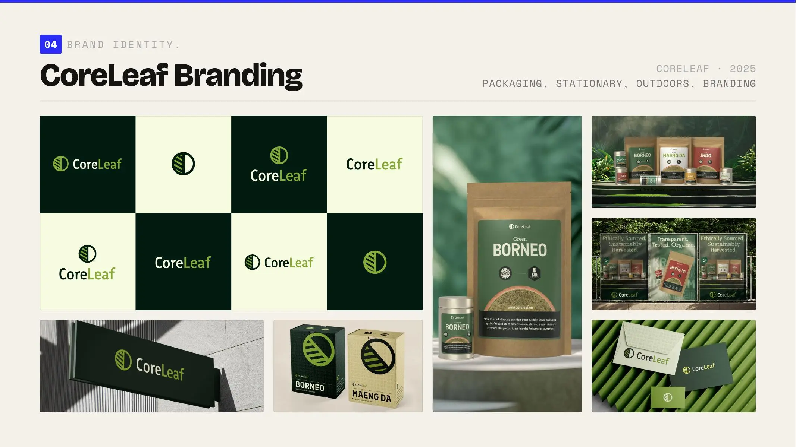

Selected project 10
CoreLeaf.
A compact brand identity and packaging system.
- Role
- Brand & digital designer
- Period
- —
- Scope
- Brand identity, packaging family
- System
- Focused case study

(A) — Context
One recognizable centre for a growing product family.
The scope
Brand identity and packaging.
The challenge
CoreLeaf needed a compact visual identity that could create recognition across boxes, tins, pouches and future product variants.
My contribution
I developed the identity and translated it into a practical packaging family, balancing master-brand recognition with enough flexibility for categories and individual products.
01
Branding first, then a packaging family.
Visual system
A focused core identity establishes ownership, while color, format and product information allow each package to differ without becoming disconnected from the range.
(B) — Outcome
A compact identity prepared to expand across products.
- Translated the identity into practical packaging rules.
- Created a family logic for different containers and variants.
- Built a visual foundation ready for campaign and ecommerce extension.